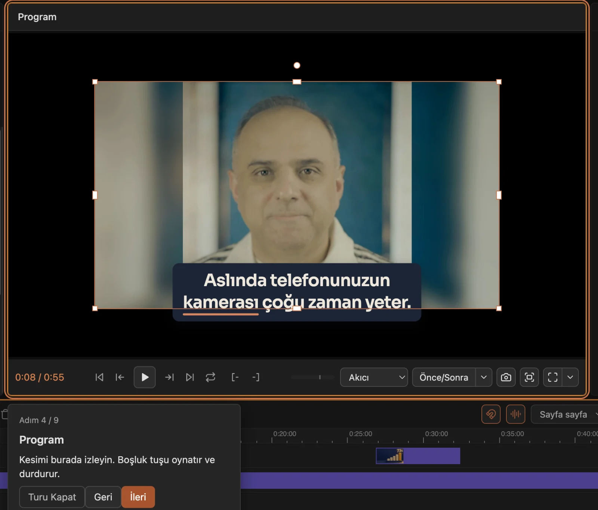

Editör penceresi
Editör dört bölümlü tek bir pencere: solda sekmeler, ortada Program, sağda sekmeler, altta boydan boya Timeline.

Üst çubuk
- Dosya: proje açma, kaydetme, dışa aktarma, kayıt ve fazlası (Projeler ve dosyalar).
- Projeler ve projenin adı, yanında Kaydedildi: proje her değişiklikte kendini kaydeder.
- Yatay 16:9 gibi kare biçimi.
- Geri Al ve İleri Al; her adım ve kaydedilen sürüm için Geçmiş.
- Kısayollar, Ayarlar ve lisansın: Deneme: 14 gün kaldı ya da Lisanslı (Lisans ve deneme).
- Dışa Aktar (Dışa aktarma).
Sol sekmeler
- Medya: kayıtların, çekimlerin, seslerin ve kurguların.
- Transkript: söylenenler, kelime kelime. Bir kelimeyi silersen videodan da kesilir (Transkript).
- Animasyonlar: bir aralık için animasyon üretmek ve stiller (Animasyonlar).
- Ses Efektleri: oynatma kafasına eklenecek hışırtılar, pıtlar, tıklar (Ses Efektleri).
Program
Kesimin oynadığı yer. Boşluk tuşu oynatır ve durdurur. Görüntüyü taşımak için sürükle, boyutunu köşelerinden değiştir. Kılavuzlar, Önce/Sonra ve tam ekran onun çubuğunda (Program).
Sağ sekmeler
Sırasıyla on sekme: Kesim, Klip, Görüntü, Ses, Altyazı, Metin, Müzik, B-roll, Yayın ve Asistan. Panel hepsine dar gelirse geri kalanlar Diğer altında bekler.
Timeline
İzlerin ve kliplerin, zaman sırasıyla; araçlar sol kenarında, ses ölçer sağında (Timeline).
Sekmeleri taşı, düzeni kaydet
Bir sekmeyi taşımak için ona sağ tıkla: Sağ Panele Taşı, Sol Panele Taşı, Sekmeyi Öne Al, Sekmeyi Arkaya Al. Sekme Sırasını Sıfırla hepsini yerine koyar. Bölümlerin arasındaki sınırları sürükleyerek boyutlarını değiştirirsin.
Ayarlar › Genel'de:
- Alıştığınız program panelleri ve kısayolları Premiere Pro, Final Cut Pro, DaVinci Resolve ya da CapCut'taki gibi yapar.
- Panel düzeni Çalışma alanlarını tutar: Düzeni Kaydet… panellerin yerini, hangi sekmenin nerede olduğunu ve boyutlarını saklar; Düzeni Sıfırla kullandığın çalışma alanını kaydettiğin hâline döndürür.
Tur
Hoş geldin penceresindeki ve Başlangıç Penceresi'ndeki Tura Başla, ana panellerde dokuz kısa adımlık bir gezinti yapar. Esc ile istediğin an bitirirsin. Ayarlar › Genel › Tur'da da var; elinde kayıt yoksa Örnek Projeyi Aç ile.
